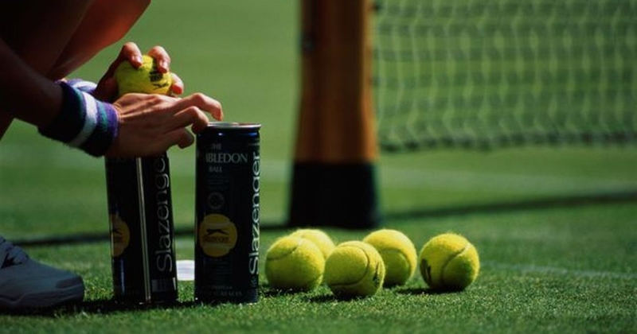
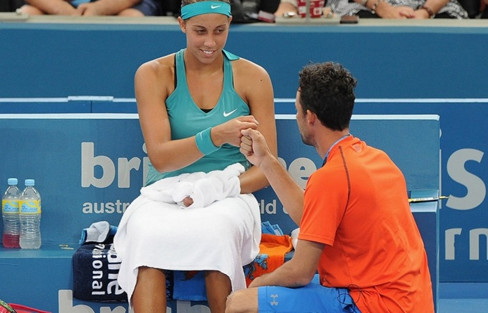

A tennis match is intended to be continuous. Because stamina is a relevant factor, arbitrary delays are not permitted.
In most cases, service is required to occur no more than 20 seconds after the end of the previous point. This is
increased to 90 seconds when the players change ends (after every odd-numbered game), and a 2-minute break is permitted
between sets. Other than this, breaks are permitted only when forced by events beyond the players' control, such
as rain, damaged footwear, damaged racket, or the need to retrieve an errant ball. Should a player be determined
to be stalling repeatedly, the chair umpire may initially give a warning followed by subsequent penalties of "point",
"game", and default of the match for the player who is consistently taking longer than the allowed time limit.
In the event of a rain delay, darkness or other external conditions halting play, the match is resumed at a later
time, with the same score as at the time of the delay, and the players at the same end of the court when rain halted
play, or at the same position (north or south) if play is resumed on a different court.
A 3 hour 36 minute match
Balls wear out quickly in serious play and, therefore, in ATP and WTA tournaments, they are changed after every nine games with the first change occurring after only seven games, because the first set of balls is also used for the pre-match warm-up. As a courtesy to the receiver, the server will often signal to the receiver before the first serve of the game in which new balls are used as a reminder that they are using new balls. However, in ITF tournaments like Fed Cup, the balls are changed in a 9–11 style. Continuity of the balls' condition is considered part of the game, so if a re-warm-up is required after an extended break in play (usually due to rain), then the re-warm-up is done using a separate set of balls, and use of the match balls is resumed only when play resumes.
A recent rule change is to allow coaching on court on a limited basis during a match. This has been introduced in women's tennis for WTA Tour events in 2009 and allows the player to request her coach once per set.
